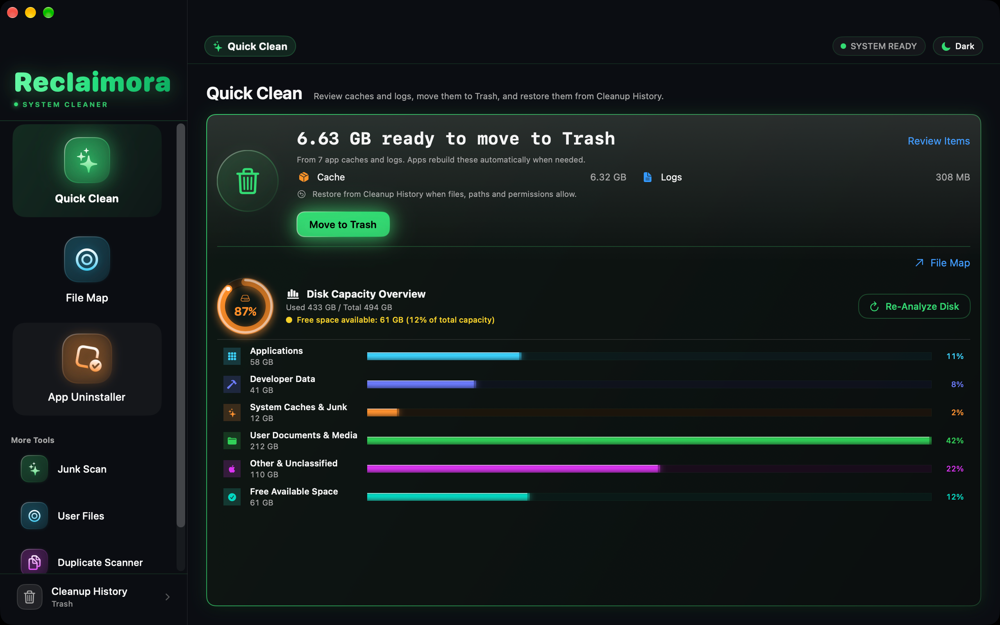

Cleanup & recovery
Understand where files go, why free space may not change, and how to try restoring them.
Read recovery guidance →RECLAIMORA / SUPPORT
Reclaimora is a native Mac storage analyzer and cleanup utility. Find clear answers about folder access, cleanup, and restoring your files.

No private files or log uploads needed.
Understand where files go, why free space may not change, and how to try restoring them.
Read recovery guidance →Check folder permissions and understand the scope of the App Store edition.
Troubleshoot scanning →Share your version and steps to reproduce. Remove personal information first.
Get help on GitHub ↗